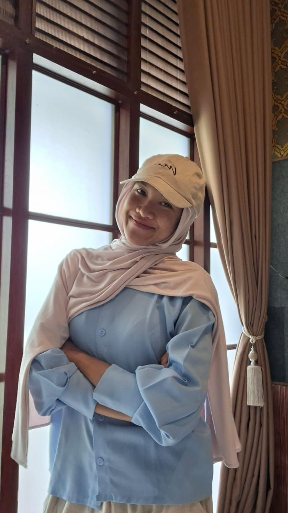
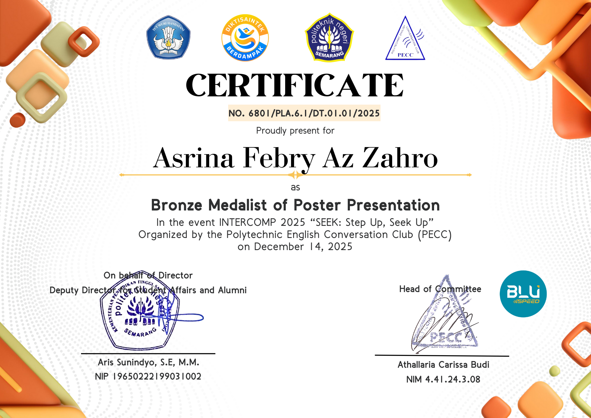
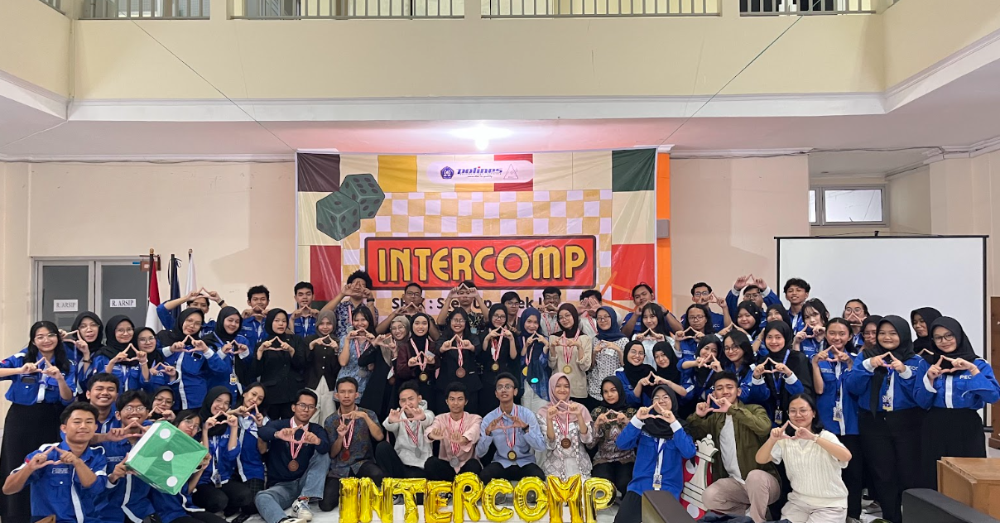
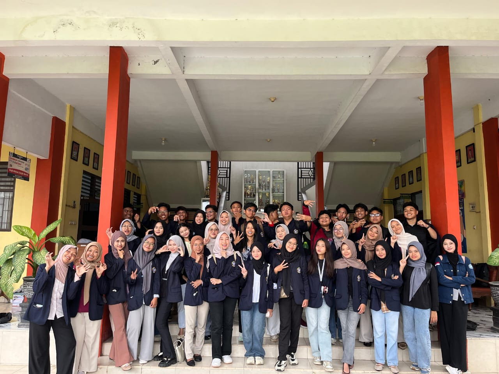
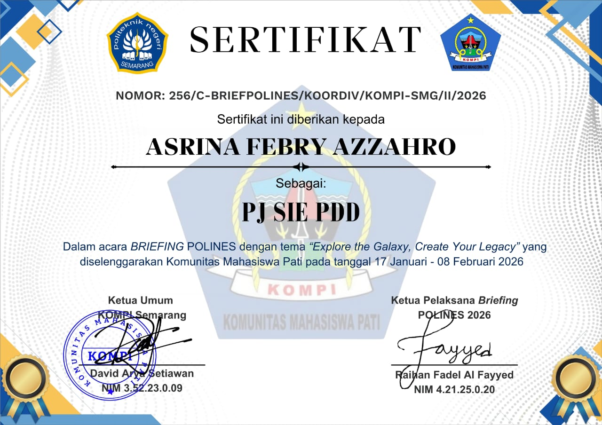
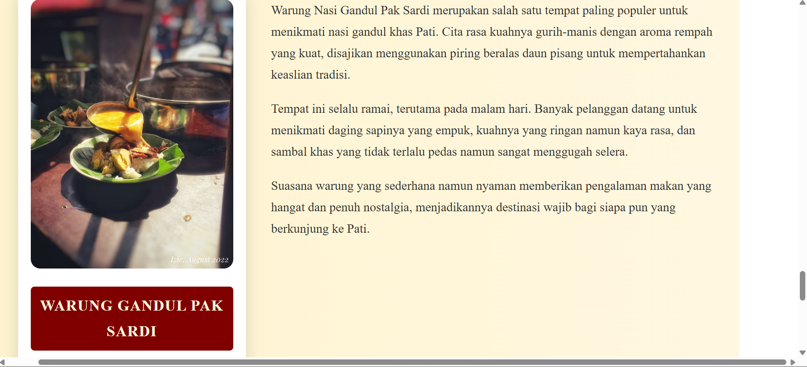
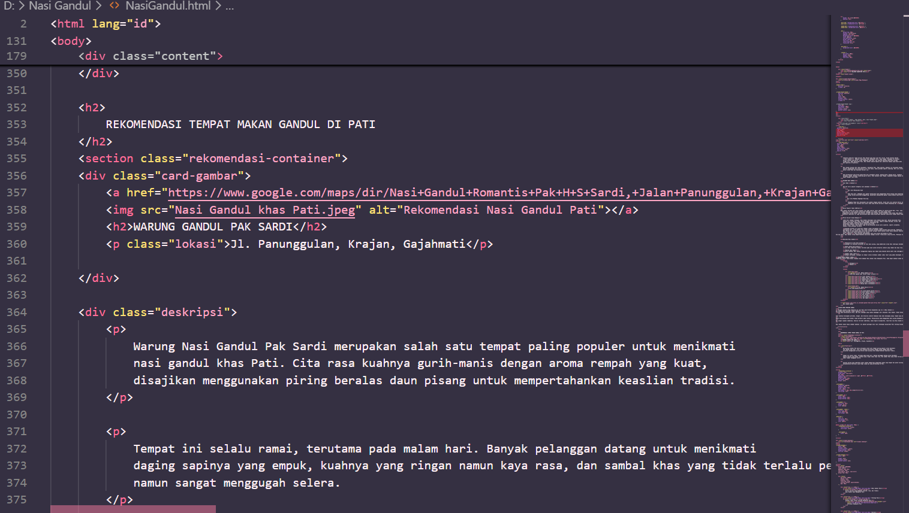
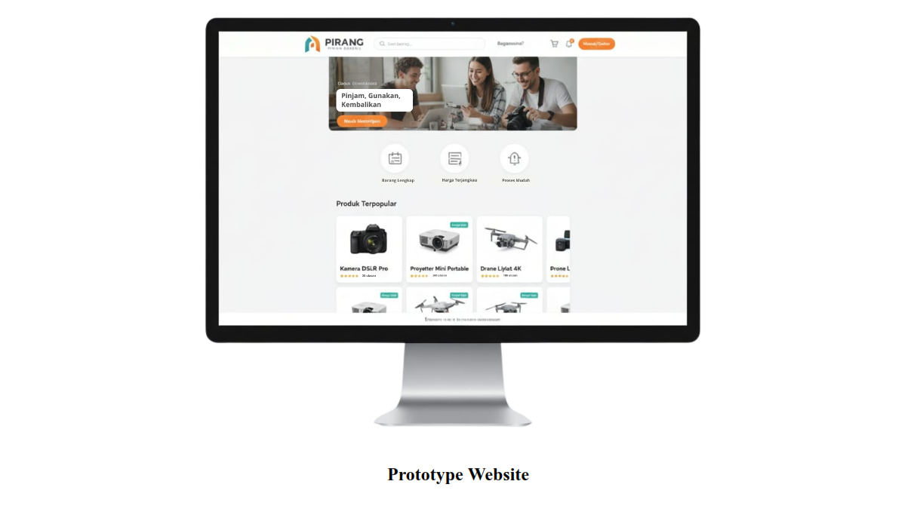
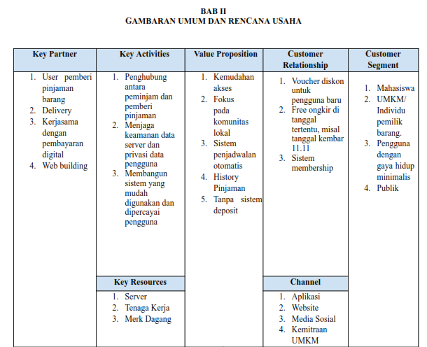

Asrina Febry Az Zahro
Manajemen Bisnis Internaasional | Politeknik Negeri Semarang

Tentang Saya
Halo, saya Asrina Febry Az Zahro Mahasiswa aktif yang berkuliah di Politeknik Negeri Semarang jurusan Administrasi Bisnis program studi Manajemen Bisnis Internasional. Saya memiliki ketertarikan dalam bidang kreativitas desain dan dalam hal manajemen bisnis digital. Saya adalah pribadi yang memiliki keingintahuan yang tinggi dan ingin terus belajar dan mengembangkan diri.
Pengalaman
Unit Kegiatan Mahasiswa
Komunitas Seni Polines
_page-0001.jpg)
Politechnic English Conversation Club


Volunteer
Sosialisasi Kampus Polines


Projek
Web Design


Business Plan


Keahlian
Microsoft Excel, Word, Powerpoint, Canva
95%
Design, Photography
85%
Teamwork
80%